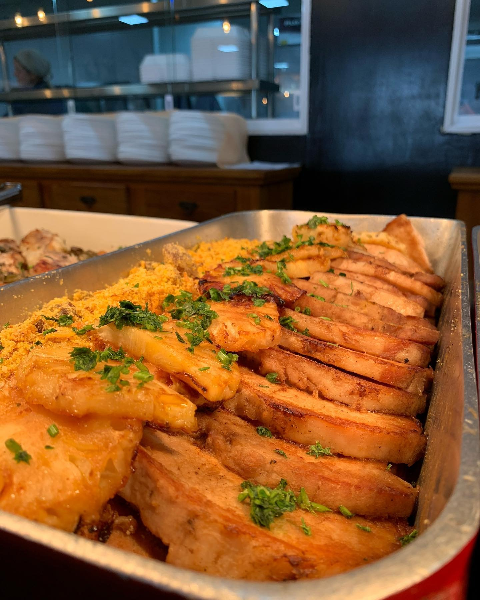

Especialidade da Casa
Lombo Assado com Abacaxi & Farofa Crocante
Lombo suíno fatiado e extremamente suculento, acompanhado de rodelas de abacaxi grelhado caramelizado que agregam um toque agridoce inconfundível, servido com a tradicional farofa artesanal da casa.